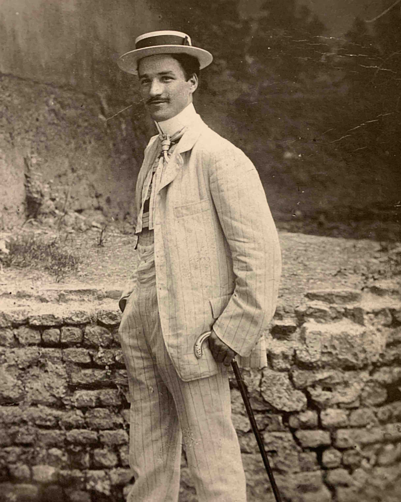
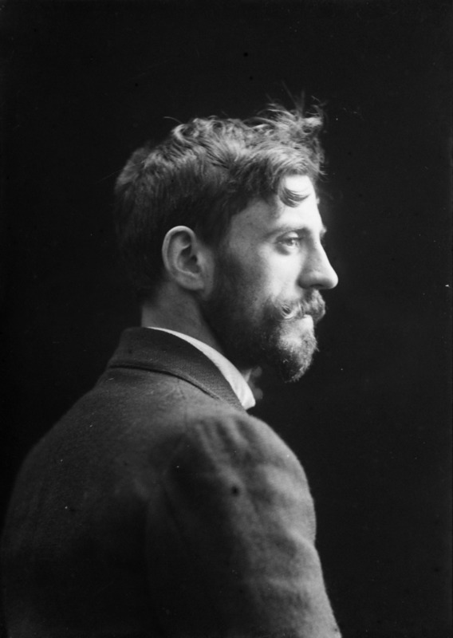
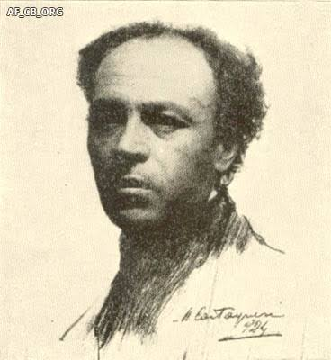
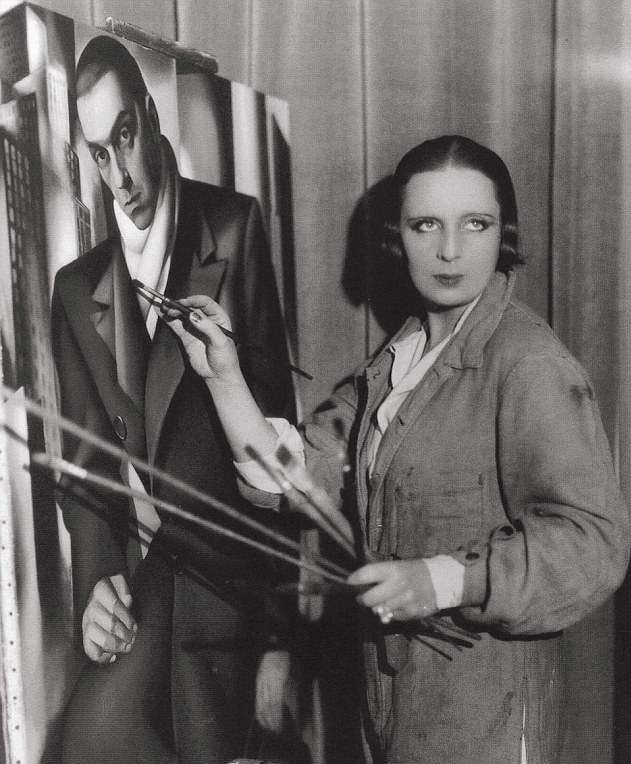

PERSONE
Pittori, scultori e fabbri d'arte, ma anche committenti, collezionisti e imprenditori che hanno promosso e diffuso il gusto decorativo del periodo dannunziano. Filtra per ruolo, poi scegli una scheda per scoprire vita e opere di ciascun protagonista.
01 — Artista · Pittura, incisione
Vittorio Zecchin
Xilografo e pittore, illustratore delle opere di D'Annunzio.

02 — Artista · Ceramica, vetrate/span>
Galileo Chini
Pittore e ceramista, tra Liberty e suggestioni Déco.

03 — Artista · Smalti
Giuseppe Guidi
Pittore, scultore e designer del paesaggio decorativo italiano.
04 — Artista · Ferro battuto
Carlo Rizzarda
Fabbro d'arte, maestro del ferro battuto in chiave Déco.

05 — Artista . Dipinti
Tamara de Lempicka
Mecenate e musa, committente di ritratti e opere d'arte decorativa.

06 — Imprenditore · Vetro
Paolo Venini
Fondatore della celebre vetreria muranese che porta il suo nome.